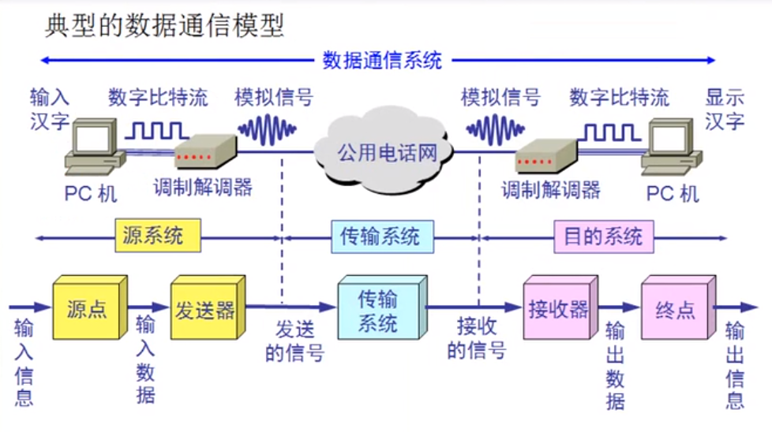
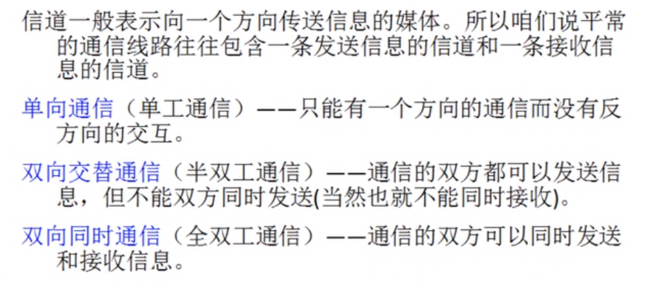
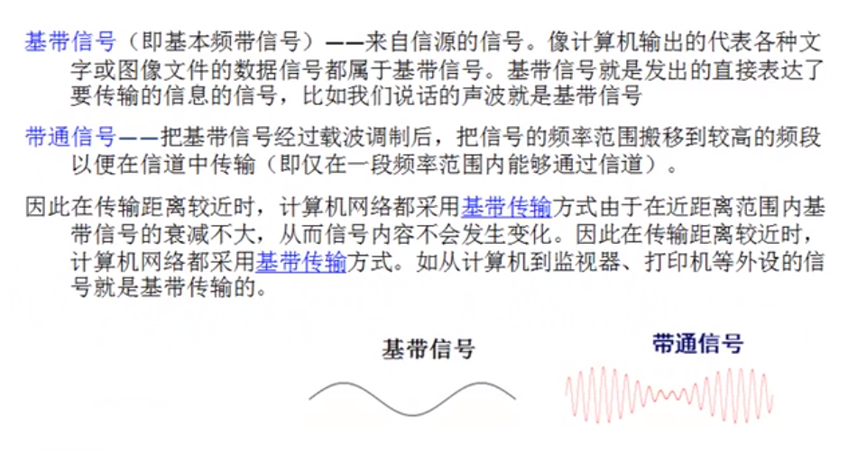
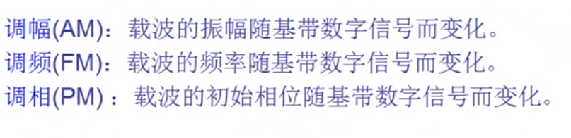
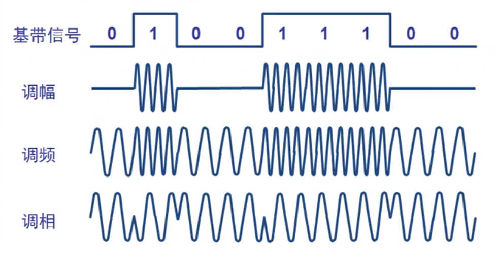
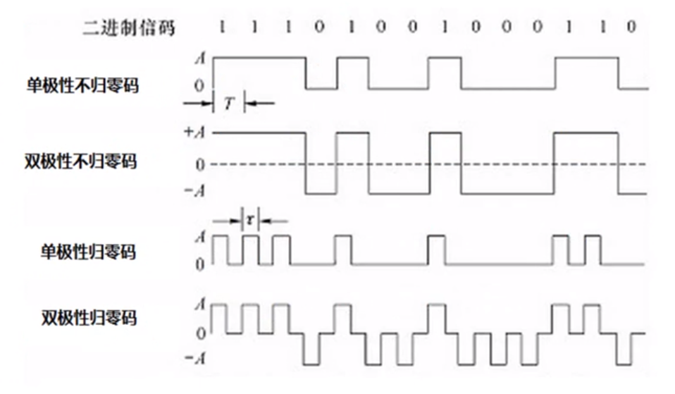
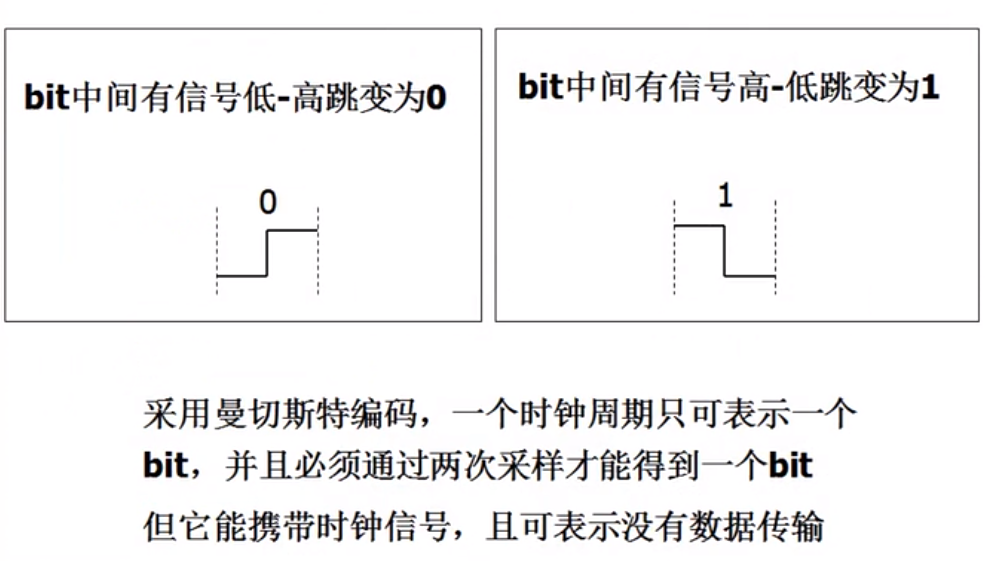
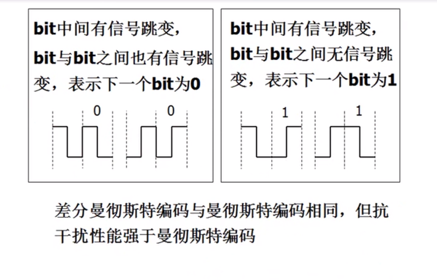
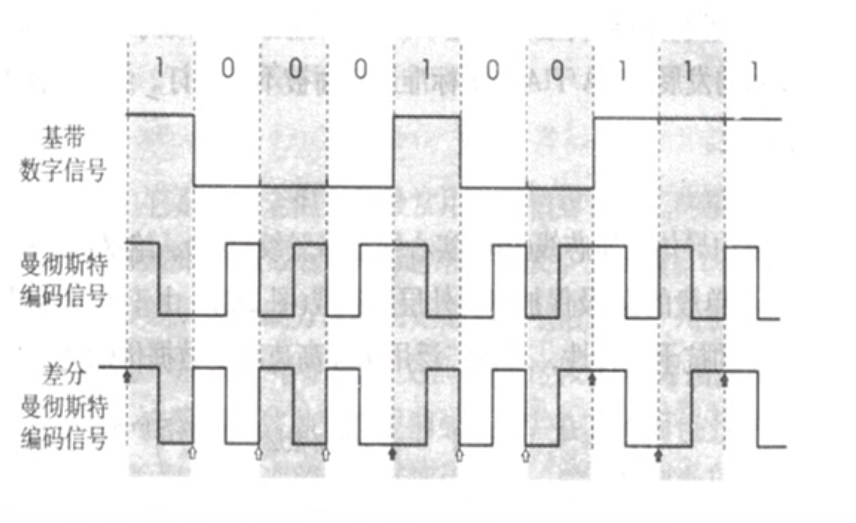

2020-02-28发表2021-11-28更新Course Notes1 分钟读完 (大约186个字)计算机网络基础知识典型的数据通信模型 如果两个计算机是通过交换机进行通信的，直接用数字比特流进行通信。 相关术语 信道 单工通信：例如电视和电视台，你可以接受电视台的信号，但是无法向电视台发送信号。 半双工通信：例如常用的对讲机。 全双工通信：例如我们的手机、电话通信。 基带信号、带通信号 基本的信号调制方法 常见编码 曼彻斯特编码 差分曼彻斯特编码 对比 #Network